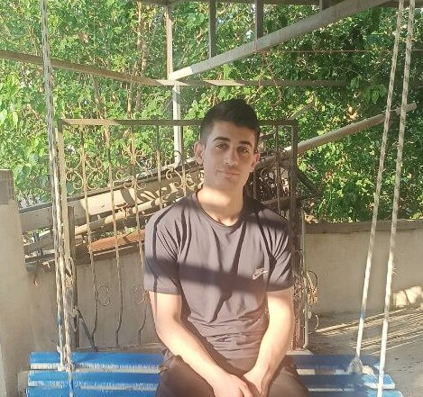

Hi
I'm Muhammet

Front-end Developer
HTML
95%
CSS
90%
Tailwind Css
75%
Boostrap
85%
JavaScript
40%
Hakkımda
Ben Muhammet Kırmızıkoç, 3 yıllık deneyime sahip bir Front-End geliştiricisiyim. 17 yaşından beri
Front-End
geliştirme konusunda kendimi geliştirmeye başladım. Web arayüzleri oluşturmak, kullanıcı deneyimini
optimize etmek ve mobil uyumlu tasarımlar yapmak konularında deneyim sahibiyim. HTML, CSS ve
JavaScript
ile yanı sıra Tailwind CSS ve Bootstrap gibi modern araçları etkin bir şekilde kullanıyorum. Hızlı
öğrenme yeteneği ve yaratıcı yaklaşımım sayesinde projelerde etkili sonuçlar elde ediyorum.
Tecrübe:
Üç yıllık deneyimim boyunca, çeşitli sektörlerde web projeleri geliştirdim. Bu projeler arasında
e-ticaret siteleri, sosyal medya platformları ve oyun siteleri yer alıyor. Bu projelerde,
kullanıcıların
ihtiyaçlarını ve beklentilerini karşılayan web arayüzleri oluşturmak için çalıştım. Ayrıca,
kullanıcı
deneyimini optimize etmek ve mobil uyumlu tasarımlar yapmak için yenilikçi çözümler geliştirdim.
Yetkinlikler:
HTML: Web sayfalarının temel yapısını oluşturmak için kullanılan bir etiketleme dilidir.
Örneğin, bir web sayfası için başlık, paragraf, resim ve bağlantı gibi öğeleri oluşturmak için
HTML'i
kullanabilirsiniz.
Ayrıca, HTML'i kullanarak web sayfalarına içerik ekleyebilir ve düzenleyebilirsiniz.
CSS: Web sayfalarının görünümünü ve stilini kontrol etmek için kullanılan bir dildir.
Örneğin, bir web sayfasının yazı tipi, boyutu, rengi ve konumunu ayarlamak için CSS'i
kullanabilirsiniz.
Ayrıca, CSS'i kullanarak web sayfalarına animasyon ve geçiş efektleri ekleyebilirsiniz.
JavaScript: Web sayfalarına etkileşim katmak için kullanılan bir dildir.
Örneğin, bir web sayfasında formları işlemek, menüleri açmak ve kapatmak ve animasyonlar çalıştırmak
için JavaScript'i kullanabilirsiniz.
Ayrıca, JavaScript'i kullanarak web sayfalarına oyunlar ve uygulamalar oluşturabilirsiniz.
Tailwind CSS: Modern ve esnek bir CSS framework'üdür.
Tailwind CSS, web sayfaları oluşturmak için kullanılan bir dizi hazır stil sınıfı içerir.
Bu sınıfları kullanarak, web sayfalarına hızlı ve kolay bir şekilde stil verebilirsiniz.
Bootstrap: Web sayfaları oluşturmak için kullanılan bir CSS framework'üdür.
Bootstrap, web sayfaları oluşturmak için kullanılan bir dizi hazır bileşen ve stil sınıfı içerir.
Bu bileşenleri ve sınıfları kullanarak, web sayfaları oluşturmak için hızlı ve kolay bir yol elde
edebilirsiniz.
Kişisel Özellikler:
Hızlı öğrenme yeteneğine sahibim.
Yeni teknolojileri ve kavramları hızla öğrenebilir ve uygulayabilirim.
Bu, yeni projelere ve zorluklara uyum sağlamama yardımcı olur.
Yaratıcı bir yaklaşıma sahibim.
Web sayfaları oluşturmak için yeni ve yaratıcı çözümler geliştirebilirim.
Bu, kullanıcı deneyimini iyileştirmeme yardımcı olur.
Takım çalışmasına yatkınım.
Diğer geliştiricilerle etkili bir şekilde çalışabilir ve işbirliği yapabilirim.
Bu, büyük ve karmaşık projelerde başarılı olmama yardımcı olur.
Gelecek Hedefleri:
Front-End geliştirme alanındaki bilgi ve becerilerimi geliştirmeye devam etmek istiyorum.
Yeni teknolojileri takip ederek, web geliştirmenin en yeni trendlerini öğrenmek istiyorum.
Gelecekte, daha büyük ve daha karmaşık projeler üzerinde çalışmak istiyorum.
Bu, beceri ve deneyimlerimi geliştirmeme yardımcı olacaktır.
İletişim Bilgileri:
muhametkkoc@gmail.com
Üç yıllık deneyimim boyunca, çeşitli sektörlerde web projeleri geliştirdim. Bu projeler arasında e-ticaret siteleri, sosyal medya platformları ve oyun siteleri yer alıyor. Bu projelerde, kullanıcıların ihtiyaçlarını ve beklentilerini karşılayan web arayüzleri oluşturmak için çalıştım. Ayrıca, kullanıcı deneyimini optimize etmek ve mobil uyumlu tasarımlar yapmak için yenilikçi çözümler geliştirdim.
HTML: Web sayfalarının temel yapısını oluşturmak için kullanılan bir etiketleme dilidir. Örneğin, bir web sayfası için başlık, paragraf, resim ve bağlantı gibi öğeleri oluşturmak için HTML'i kullanabilirsiniz. Ayrıca, HTML'i kullanarak web sayfalarına içerik ekleyebilir ve düzenleyebilirsiniz. CSS: Web sayfalarının görünümünü ve stilini kontrol etmek için kullanılan bir dildir. Örneğin, bir web sayfasının yazı tipi, boyutu, rengi ve konumunu ayarlamak için CSS'i kullanabilirsiniz. Ayrıca, CSS'i kullanarak web sayfalarına animasyon ve geçiş efektleri ekleyebilirsiniz. JavaScript: Web sayfalarına etkileşim katmak için kullanılan bir dildir. Örneğin, bir web sayfasında formları işlemek, menüleri açmak ve kapatmak ve animasyonlar çalıştırmak için JavaScript'i kullanabilirsiniz. Ayrıca, JavaScript'i kullanarak web sayfalarına oyunlar ve uygulamalar oluşturabilirsiniz. Tailwind CSS: Modern ve esnek bir CSS framework'üdür. Tailwind CSS, web sayfaları oluşturmak için kullanılan bir dizi hazır stil sınıfı içerir. Bu sınıfları kullanarak, web sayfalarına hızlı ve kolay bir şekilde stil verebilirsiniz. Bootstrap: Web sayfaları oluşturmak için kullanılan bir CSS framework'üdür. Bootstrap, web sayfaları oluşturmak için kullanılan bir dizi hazır bileşen ve stil sınıfı içerir. Bu bileşenleri ve sınıfları kullanarak, web sayfaları oluşturmak için hızlı ve kolay bir yol elde edebilirsiniz.
Hızlı öğrenme yeteneğine sahibim. Yeni teknolojileri ve kavramları hızla öğrenebilir ve uygulayabilirim. Bu, yeni projelere ve zorluklara uyum sağlamama yardımcı olur. Yaratıcı bir yaklaşıma sahibim. Web sayfaları oluşturmak için yeni ve yaratıcı çözümler geliştirebilirim. Bu, kullanıcı deneyimini iyileştirmeme yardımcı olur. Takım çalışmasına yatkınım. Diğer geliştiricilerle etkili bir şekilde çalışabilir ve işbirliği yapabilirim. Bu, büyük ve karmaşık projelerde başarılı olmama yardımcı olur. Gelecek Hedefleri: Front-End geliştirme alanındaki bilgi ve becerilerimi geliştirmeye devam etmek istiyorum. Yeni teknolojileri takip ederek, web geliştirmenin en yeni trendlerini öğrenmek istiyorum. Gelecekte, daha büyük ve daha karmaşık projeler üzerinde çalışmak istiyorum. Bu, beceri ve deneyimlerimi geliştirmeme yardımcı olacaktır.
İletişim Bilgileri: muhametkkoc@gmail.com